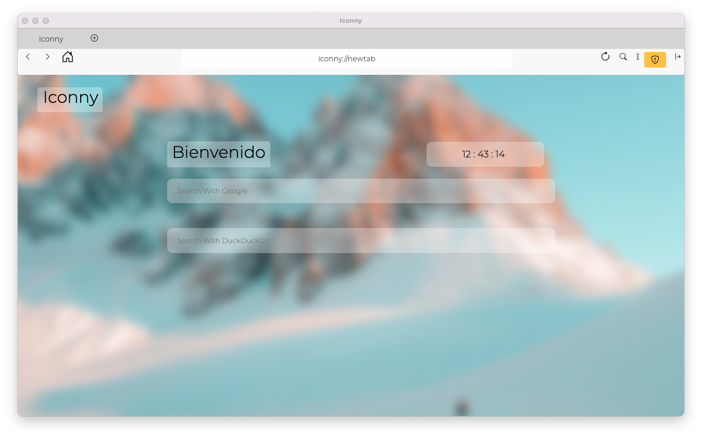
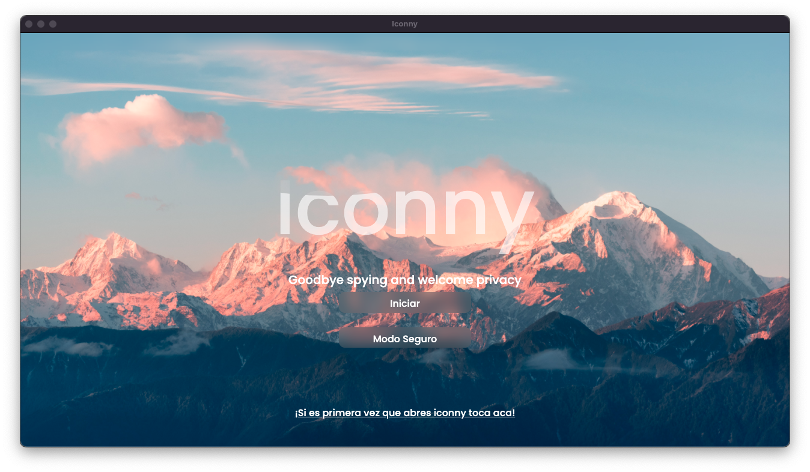
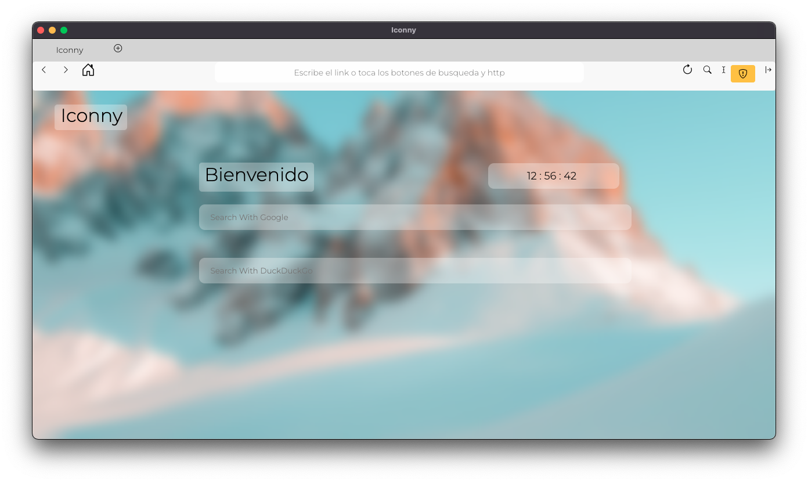
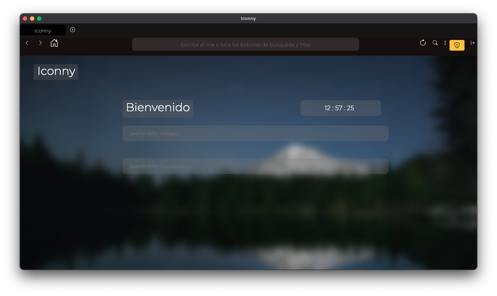
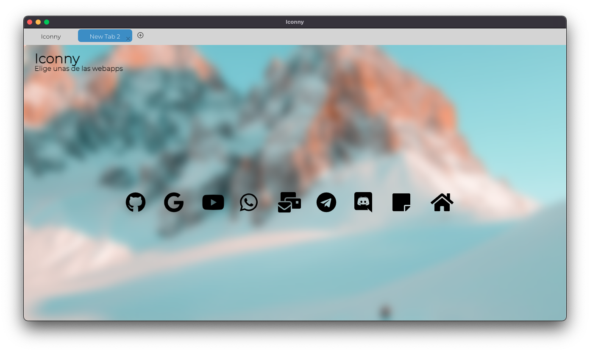
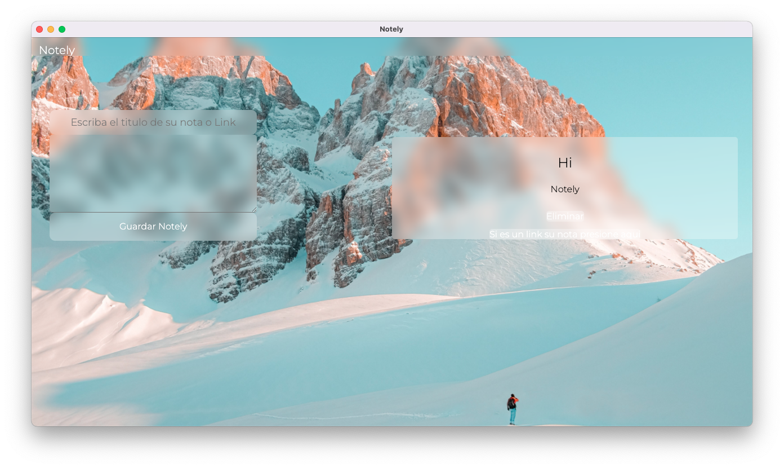
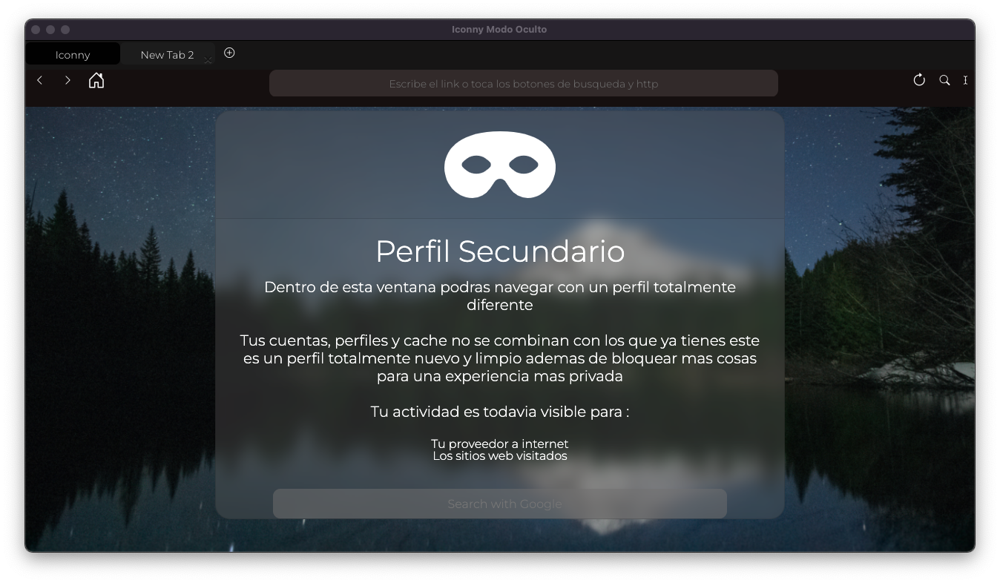
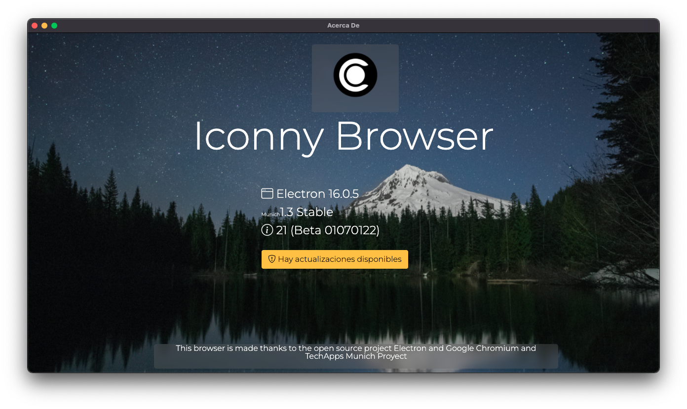

Iconny 21 el inicio de una nueva era y la edicion aniversario
Escrito por Admin 17/01/2022

Iconny 21 representa la primera version de la serie 20 del navegador bajo nuevas direcciones
y siendo la primera version del 2022 y ademas la version aniversario esta actualizacion esta enfocada en mejorar lo presentado en
la 20.1
Novedades
Nuevos backgrounds



Nuevo diseño de las Webapps
Este nuevo diseño ayuda a ser mas rapido y ligero la seleccion de aplicaciones

Mejoras en Notely

Ahora Notely tiene una mejor interfaz para las pantallas chicas y corrigiendo varios bugs
Funcionamiento completo en modo oculto

Ahora el modo oculto posee todas las funciones de la version normal dandole mayor productividad en este
Iconny Update Alert

Ahora Iconny tendra una alerta cada vez que haya version disponible para actualizar tanto como en la interfaz
y el about del navegador
Cambios menores
Se optimizado el peso de las build de Iconny
Actualizacion de WebVI 6.5 mejorando la vista de webviews
Build stable para Mac
Actualizacion a ElectronJS 16.0.5
Mejora de carga del navegador en 5 segundos
Esperamos que le guste los cambios